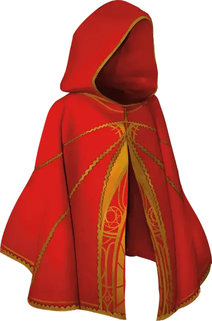

Плащ шарлатана
Cape of the Mountebank
Чудесный предмет, редкий

Рекомендованная стоимость 4 000 ЗМ
Этот плащ слабо пахнет серой. Пока вы носите его, вы можете действием Магия сотворить Переносящую дверь; эта особенность не может быть использована снова до следующего рассвета.
Когда вы телепортируетесь с помощью этого заклинания, вы оставляете за собой облако дыма; оставленное вами пространство Слабо заслонено этим дымом до конца вашего следующего хода.